Cognitive and Brain Health Laboratory
Note (2026-19-5)
All the post-processing (e.g., CIFTItoFC) and data prep (e.g., extract_links) functions have been removed from this package. These functions are now moved into a new R package called MRIpostproc
1. Introduction
The FCtools package contains a collection of in-house R functions for post-processing, analyzing and visualizing brain connectivity data (see here for the full list of functions). This readme will show you how to generate connectograms and chord diagrams to illustrate your brain connectivity-related results, both SC and FC. Currently, in our neuroimaging database, we have connectivity data that are derived from different atlas parcellation schemes, as a result, the lengths of the input vectors (N x N FC/SC matrix stringed out into a single vector) are contingent upon the atlas parcellation schemes used.
If you have not previously installed this package:
install.packages("pak")
pak::pak("CogBrainHealthLab/FCtools")1. Network connectogram (New!)
library(FCtools)
mask=sample(c(1,0), 7021, replace = TRUE, prob = c(0.001, 0.999))
data=runif(7021,min = -1,max=1)*mask
vizNetConnectogram(colMeans(demomat))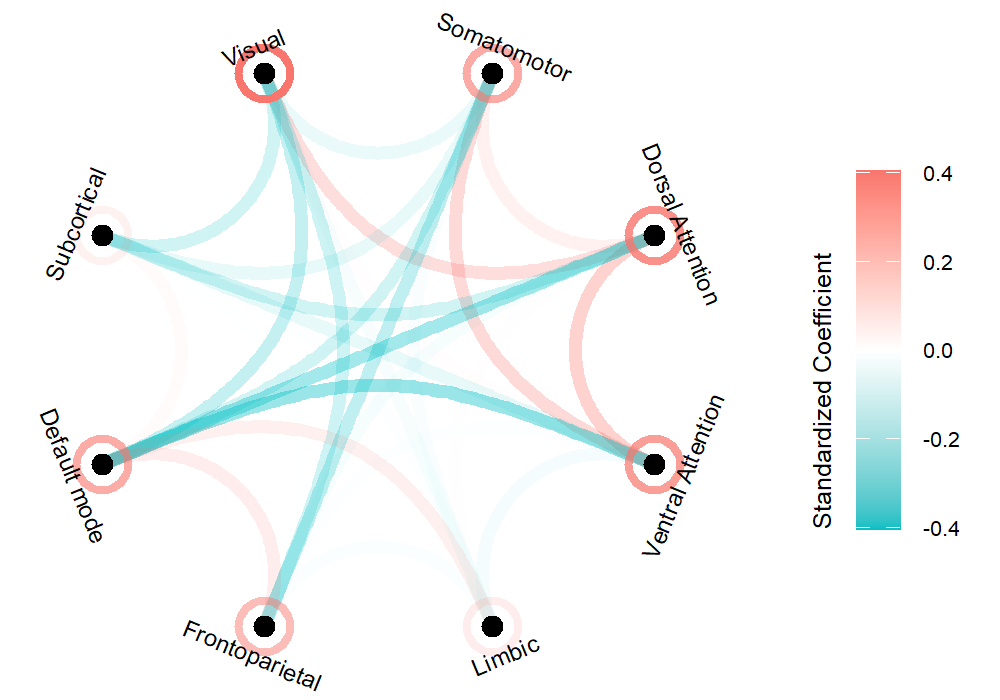
2. Glassbrain
library(FCtools)
mask=sample(c(1,0), 7021, replace = TRUE, prob = c(0.001, 0.999))
data=runif(7021,min = -1,max=1)*mask
vizGlassbrain(data,orientation_labels = T)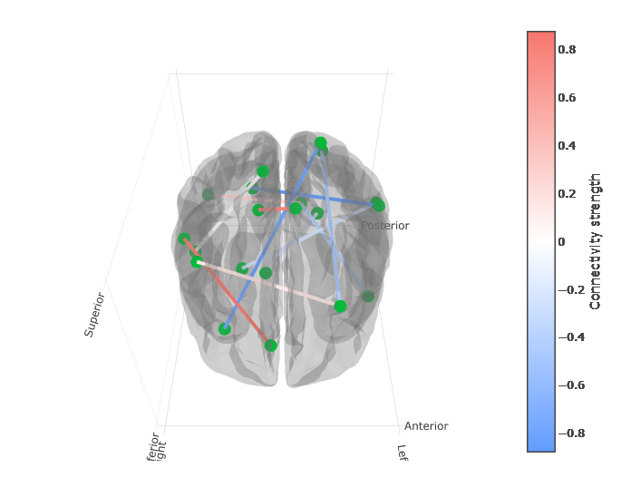
3. Connectogram
A. Plotting the connectogram
The vizConnectogram() function can take input vectors of the following lengths:
30135 — derived from 246x246 FC matrices generated using the Brainnetome atlas
23871 — derived from 219x219 FC matrices generated using the Schaefer-200 atlas + 19 subcortical regions from the freesurfer subcortical segmentations. This is typically used in the NIMH datasets
7021 — derived from 119x119 FC matrices generated using the Schaefer-100 atlas + 19 subcortical regions from the freesurfer subcortical segmentations. This is typically used in the ABCD dataset
4005 — derived from 90x90 SC matrices generated using the AAL-90 atlas
The number of nodes to display in the connectogram plot will be automatically determined from the length of the input vector.
For the first example, we will generate a sparse vector of 23871 random numbers ranging from -1 to 1 and use this vector as the input vector to simulate the results derived from running the network-based statistics on the 219x219 FC matrices. The vector is ‘sparse’ because it contains very few non-zero values. You will see why this is important later
In the above line, the frequency of the numbers c(1,0, -1) appearing in the vector corresponds to the specified probabilities prob = c(0.001, 0.998,0.001). Next, we will call upon the vizConnectogram() function from the cloud, and run it on the results vector
vizConnectogram(data=results, filename="FC_219.png")The above code will output the following FC_219.png image in your working directory. Do note that the distribution of nodes in the Schaefer-100 and Schaefer-200 parcellation schemes is not symmetrical across both hemispheres.
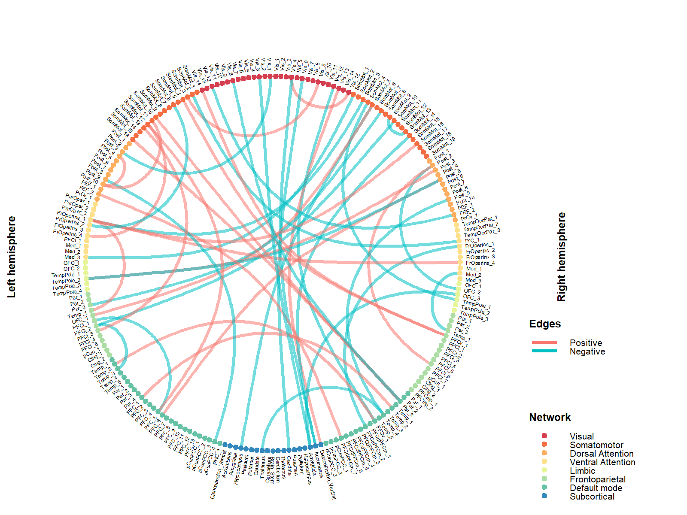
B. Customizing optional parameters
The vizConnectogram() allows you to customize the following visual parameters
hot: color code or name for the color of positive edgescold: color code or name for the color of positive edgesedgethickness: thickness of the edge links; default thickness is set to0.8colorscheme: a vector of 8 color codes/names for all FC matrices or 7 color codes/names for SC matrices
In the next example, we will simulate results derived from the brainnetome atlas (246x246 FC matrices; length of input vector=30135) and also play around with the color-related parameters,
results=sample(c(1,0, -1), 30135, replace = TRUE, prob = c(0.001, 0.998,0.001))
## to generate color codes for the color scheme
library(paletteer)
colorcodes=c(paletteer_c("ggthemes::Sunset-Sunrise Diverging", 8))
vizConnectogram(data=results, filename="FC_246.png", hot="red", cold="blue", colorscheme=colorcodes)The above code will output the following FC_246.png image in your working directory.  As you can see it can be a little difficult to differentiate which network the nodes belong to because the colors are too similar. So do pay attention to the choice of colors if you were to adjust the
As you can see it can be a little difficult to differentiate which network the nodes belong to because the colors are too similar. So do pay attention to the choice of colors if you were to adjust the colorscheme parameter
C. Excessive cluttering
The connectograms are ideal for visualizing sparse FC/SC matrices. If there are too many non-zero values in these matrices, the connectogram can become too cluttered and consequently difficult to interpret. Here’s an example:
results=sample(c(1,0, -1), 7021, replace = TRUE, prob = c(0.01, 0.98,0.01))
vizConnectogram(data=results, filename="FC_119.png")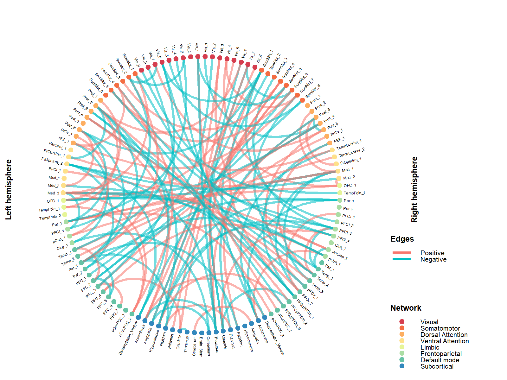
You can make it look a little less cluttered by reducing the thickness of the edge links. Note that the default value is 0.8
vizConnectogram(data=results, filename="4xFC_119_thinedges.png",edgethickness = 0.5)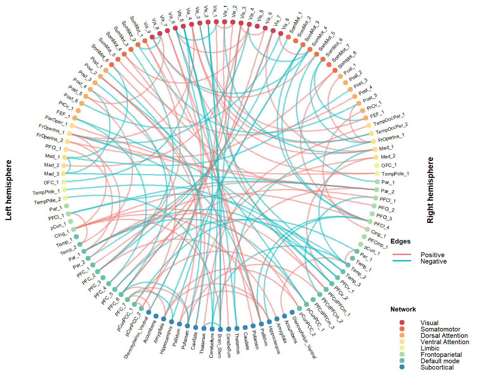
This will be very effective if the edges are nicely bundled up, which isn’t the case for the above. So if you tried to reduce the thickness of the edge links and it doesn’t help much, then perhaps you should use a chord diagram insteadC. Multiple connectograms
If necessary, you can plot out multiple connectograms and fit them nicely in a grid format.
network1=sample(c(1,0, -1), 7021, replace = TRUE, prob = c(0.005,0.99,0.005))
network2=sample(c(1,0, -1), 7021, replace = TRUE, prob =c(0.005, 0.99,0.005))
network3=sample(c(1,0, -1), 7021, replace = TRUE, prob = c(0.005, 0.99,0.005))
network4=sample(c(1,0, -1), 7021, replace = TRUE, prob = c(0.005, 0.99,0.005))
vizConnectogram(data=rbind(network1,network2,network3,network4),
filename="4xFC_119.png",
ncol=2,
nrow=2,
title=c("a) Network 1","b) Network 2","c) Network 3","d) Network 4"))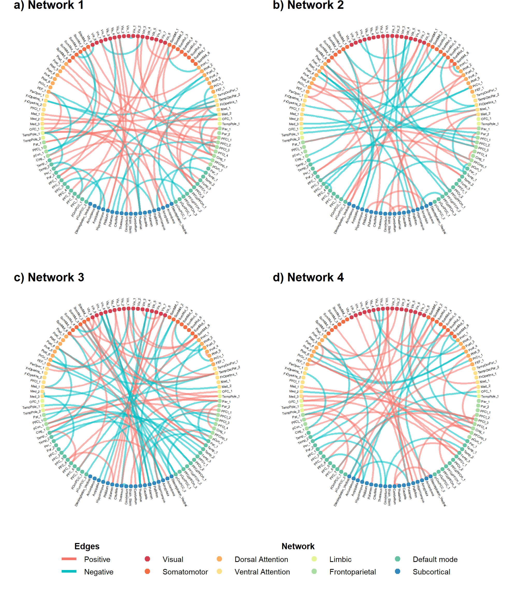
4. Chord diagram
The vizChord() function can take input vectors of various lengths as described in the connectogram section and additionally, vectors of 68 values — derived from 12x12 functional network matrices generated using the Gordon atlas. The 12x12 functional network matrices are only available in the ABCD dataset.
A. Plotting the chord diagram
Here’s a basic use of the vizChord() function on an input vector of 7021 non-zero values ranging from -1 to 1.
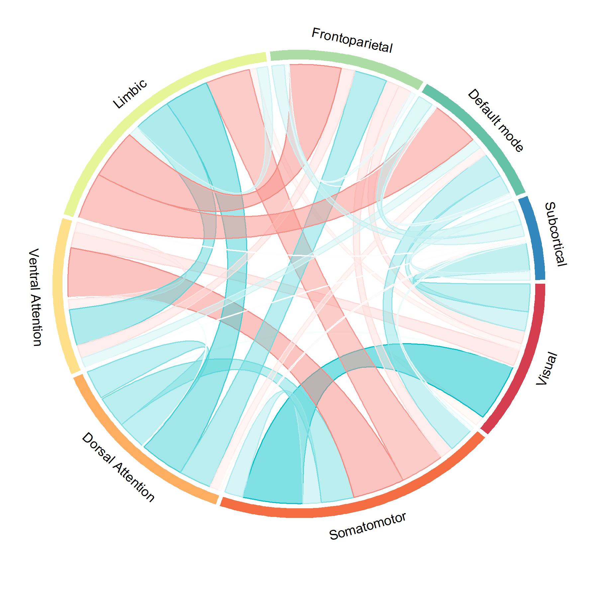
Just like the vizConnectogram() function, you can customize the hot and cold colors, as well as the colors for the networks. Note that if your input vector has a length of 78 (derived from the 12x12 functional network matrices), you will need to specify 12 colors (because 12 networks) for the colorscheme.
B. Customizing optional parameters
results=runif(78, min = -1, max = 1)
## to generate color codes for the color scheme
library(paletteer)
colorcodes=c(paletteer_c("grDevices::Temps", 12))
vizChord(data=results, filename="FC_chord12.png", hot="red", cold="blue", colorscheme = colorcodes)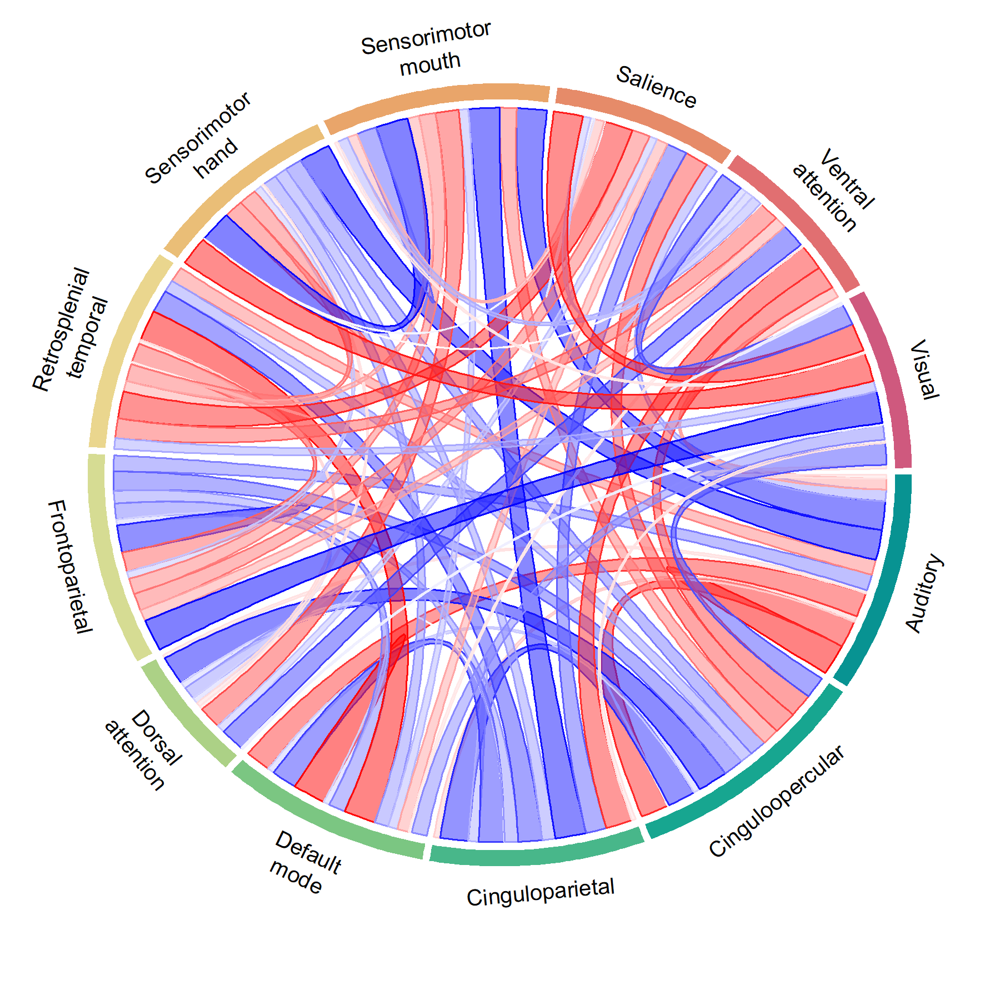
C. Multiple connectograms
Just as above, you can plot out multiple chord diagrams and fit them nicely in a grid format.
network1=sample(c(1,0, -1), 7021, replace = TRUE, prob = c(0.005,0.99,0.005))
network2=sample(c(1,0, -1), 7021, replace = TRUE, prob =c(0.005, 0.99,0.005))
network3=sample(c(1,0, -1), 7021, replace = TRUE, prob = c(0.005, 0.99,0.005))
network4=sample(c(1,0, -1), 7021, replace = TRUE, prob = c(0.005, 0.99,0.005))
vizChord(data=rbind(network1,network2,network3,network4),
filename="4xFCchord_119.png",
ncol=2,
nrow=2,
title=c("a) Network 1","b) Network 2","c) Network 3","d) Network 4"))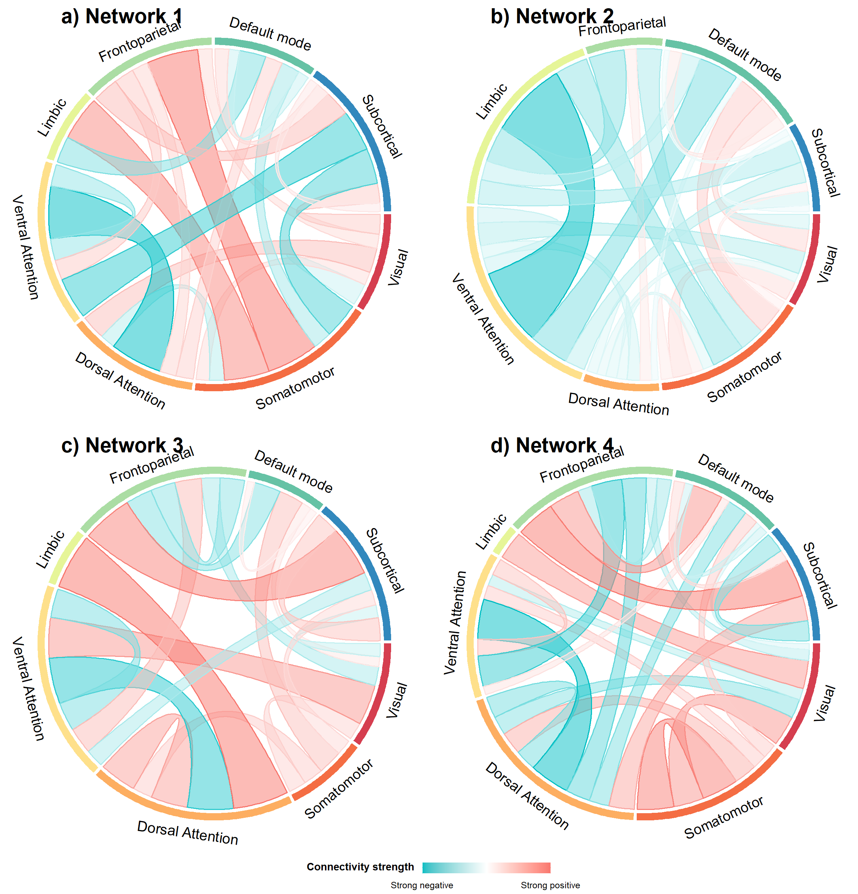
5. Heatmap
The connectogram and chord diagram cannot be use to visualize edge-level statistics for all edges in the connectome. Instead a heatmap should be used
sub1=get("demomat")[1,] ## load demo data
vizHeatmap(data=sub1, filename="heatmap219.png")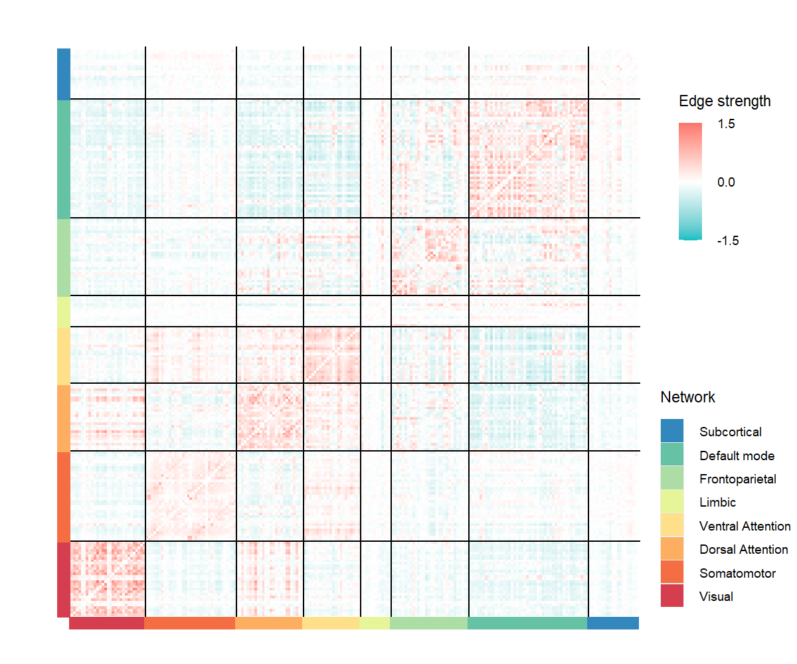
Multiple heatmaps can be generated in a similar manner
sub1=get("demomat")[1,]
sub2=get("demomat")[2,]
sub3=get("demomat")[3,]
sub4=get("demomat")[4,]
vizHeatmap(data=rbind(sub1,sub2,sub3,sub4),title=c("sub1","sub2","sub3","sub4"), filename = "4xheatmap219.png", ncol=2, nrow=2)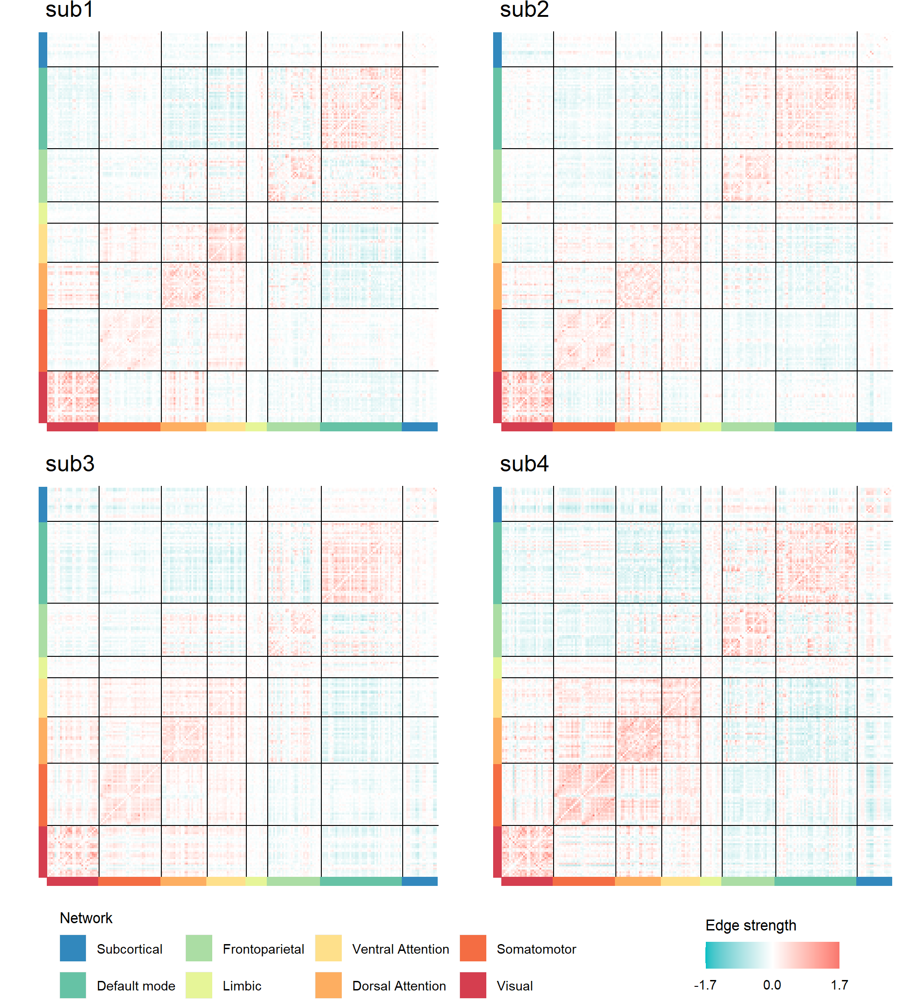